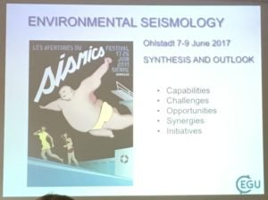
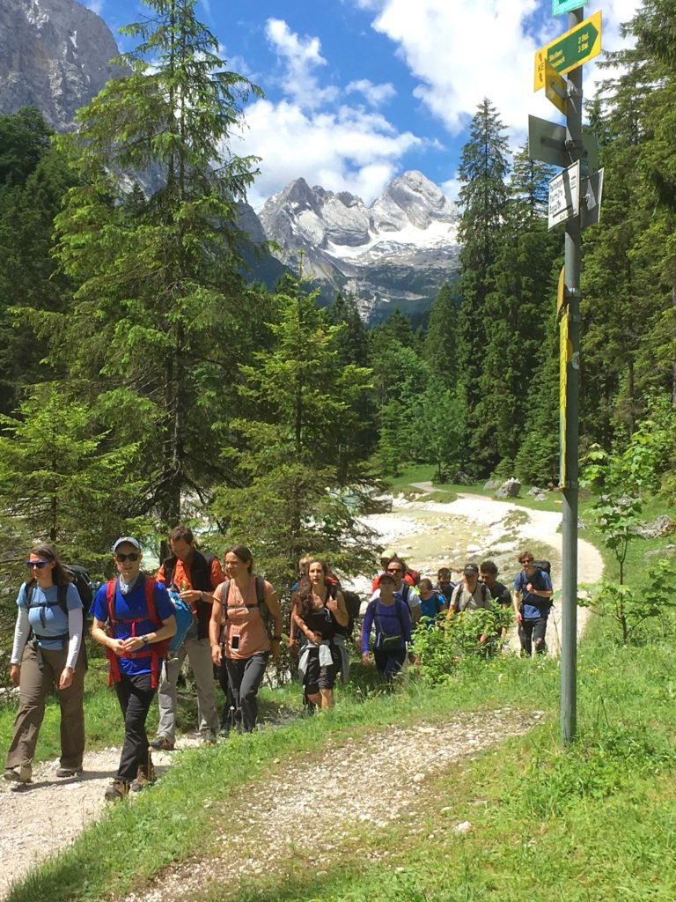

It's been a busy summer for the Glacier Dynamics group, with a number of high-profile presentations focused around glacier seismology.
In June, Tim participated in back to back workshops on Environmental Seismology, then taught during a weeklong summer course on Glacier Seismology. During the Environmental Seismology workshop, Tim gave one of the evening keynote lectures, during which he presented an overview of his and others efforts to use seismology to better understand glaciological processes. The workshop took place in Bavaria, Germany, and was attended by approximately 60 international scientists, many of which took part in the excellent field trip to a rockfall monitoring site in the alps.
Following the meeting in Germany, Tim flew straight to Fort Collins, CO, for the Glacier Seismology course to present on glacier hydrology, iceberg calving, and the seismic signals produced through these mechanisms. Margot, a member of our lab, participated as a sponsored student in the Glacier Seismology course, and presented her research to date on Taku Glacier during the course.



